使用 WPML 插件构建一个多语言站点
这节课来学习如何使用 WPML 来创建一个 多语言站点。
购买插件
WPML 是付费插件，可以到官网购买。
如果不想购买，可以去看第29课 Polylang 的内容，在下一课中，将使用免费（主要功能）的 PolyLang 来创建多语言站点。
初始化配置
安装并启用 WPML 后，会有一个初始化的过程，首先我们初始化一下插件，单击「配置 WPML」按钮，进入配置的页面。
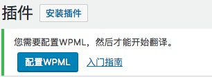
将语言设置为中文：
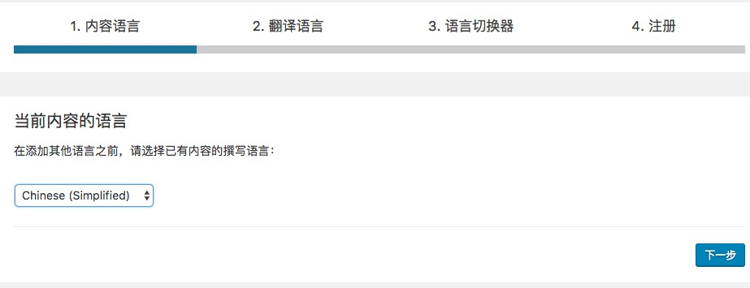
然后选择我们要支持的语言，这里依然选择英文：
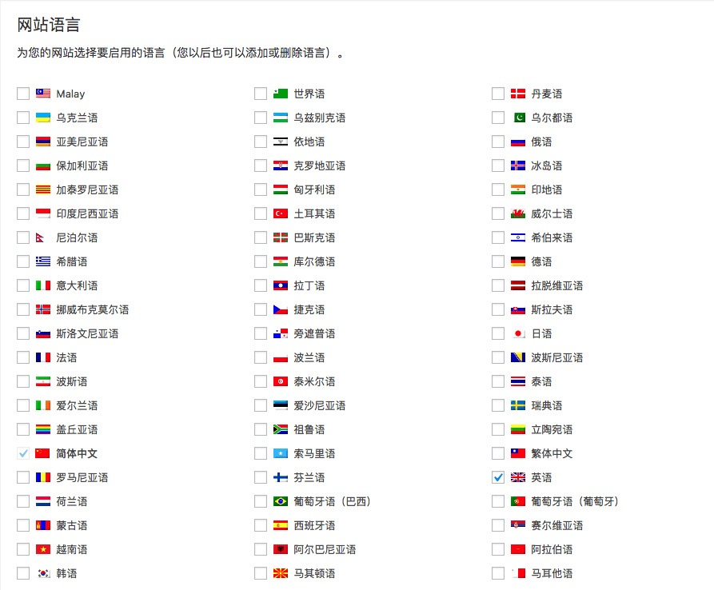
接下来配置语言切换器，在语言切换器这里，可以通过拖拽来调整我们语言展示顺序以及当某篇文章没有对应的内容时的跳转机制。
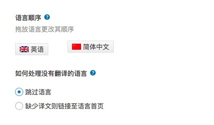
下面这些选项，则根据你自己的个人需要来设置，可以将语言转换器添加到小工具和页脚，来让访客更加容易切换语言。
设置完成后，就是输入你在 WPML 官网购买的授权进行激活。
设置插件
WPML 提供了非常多的设置项，可以根据自己的需要来进行设置。
首先是根据你的需要，可以设置默认的语言以及增加新的语言、删除不再使用的语言。
接下来是 URL 格式，可以根据自己的需要，选择不同的语言格式，比如子目录格式、不同域名的格式、参数格式等等。推荐大家使用目录，需要配置的内容较少，而且URL也比较美观。
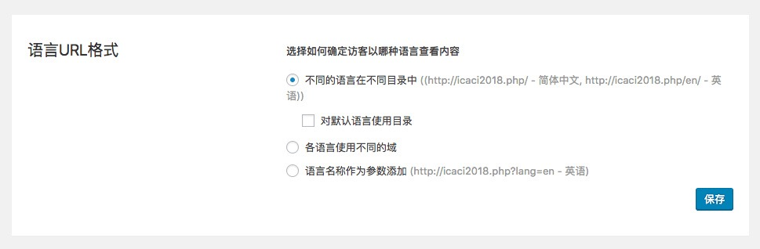
语言切换器部分大体上和我们初始化的内容是一致的，不过这里有几个多出来的选项，我说明一下：
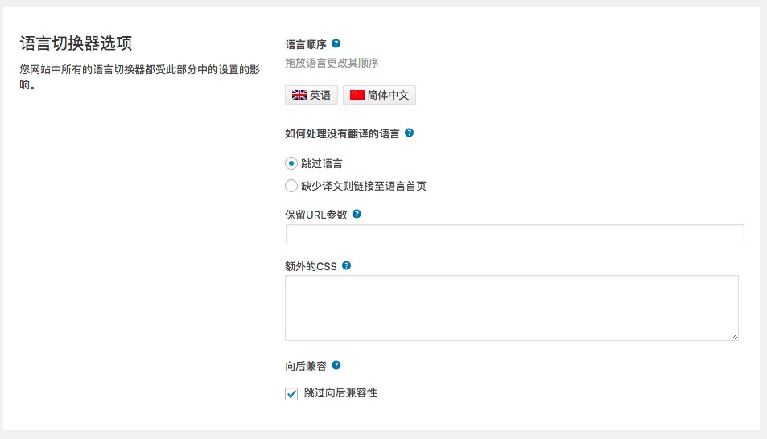
这里保留 URL 参数可以让语言切换器在切换语言时，带上一定的参数，比如 version、time 等信息，在这里设置参数，如 version、time，然后当通过链接进入时，链接中的版本信息和时间信息就被保留下来了。
额外的 CSS 可以为语言选择器添加一些 CSS 样式，使其适配我们网站的风格。
向后兼容选项是否开启取决于你的主题是否需要，你的主题是最近更新过的，可以不勾选这个选项了。
这四个选项我们之前说过，不再说明：
自定义语言切换器这里允许我们根据自己的需要设置语言切换器的样式，如果有特殊的切换需要，可以在这里调整。
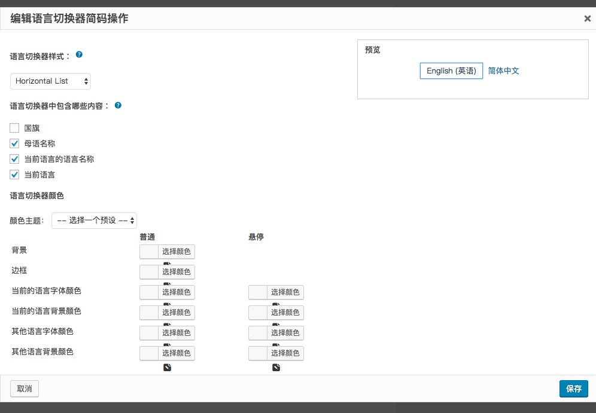
要显示的博客文章则是设置你的站点在不同语言下的显示策略，如果某篇文章不存在对应版本的翻译，该如何选择？
隐藏语言则可以帮助你将某些语言隐藏起来，方便调试，调试完成后，再重新开放出来。
使主题多语化可以为你的主题加入多语言的支持，一般都是勾选的。
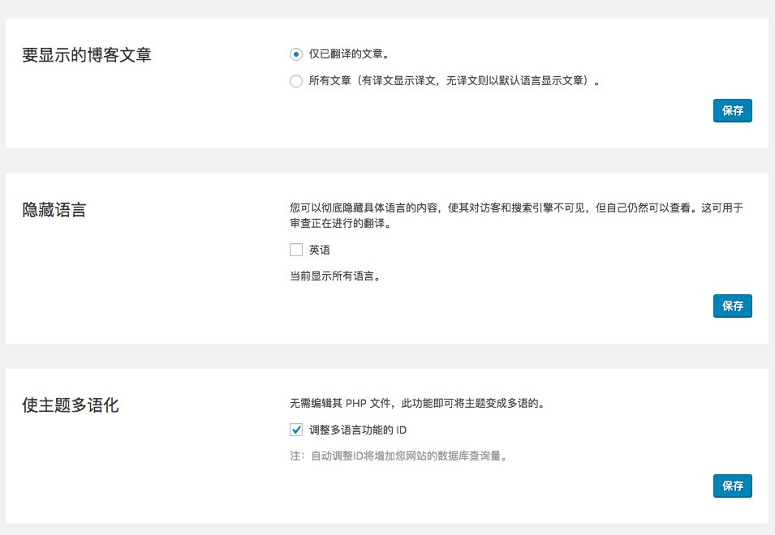
浏览器语言重定向则根据你自己的需要选择，是否需要根据 用户的浏览器语言自动切换到对应的语言中。可以根据自己的需要设置，不过建议禁用掉，因为如果随意跳转，可能会让你的访客产生迷惑。
SEO 选项则是在页面的头部加入其他语言的链接，勾选上即可。
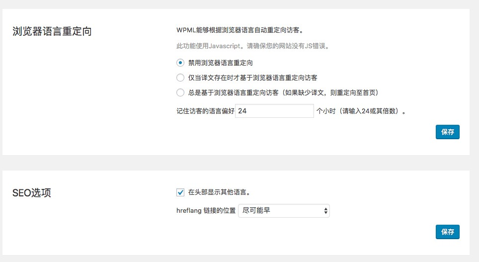
用于 Ajax 操作的语言过滤：这一项取决于你的主题是否使用了 Ajax ，如果使用了，则可以开启这个选项。如果没有使用，可以不开启这个选项。
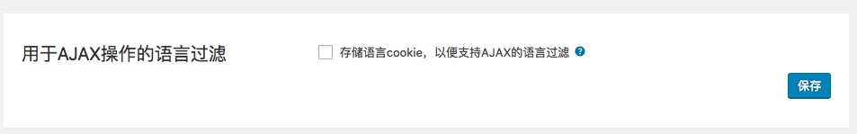
翻译目录
在 WPML 中，对目录的处理要在插件中进行，单击「WPML」— 「分类翻译」命令，就可以进入到目录的翻译页面，选择你要翻译「目录」或「标签」。
可以看到已经创建的目录：
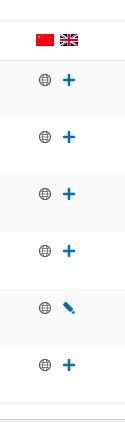
显示为一个地球图标，则说明这个目录的主语言为当前所对应的语言，而后面的加号，则表示需要为这个目录创建一个对应的目录。后面显示的铅笔的，则说明已经为这个目录创建了对应目录，接下来可以点击铅笔对这个目录进行修改。
点击加号新增对应的目录，可以很方便的设置对应的内容。点击中间的按钮，可以将左侧的内容复制到右侧。设置完成后，单击“保存”按钮，即可创建对应语言的目录了。
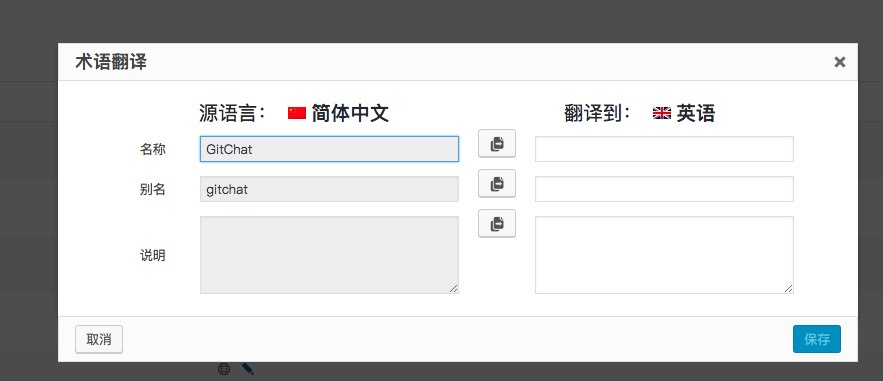
设置菜单
单击「外观」— 「菜单」命令，可以看到不同的语言：
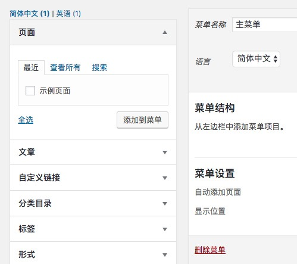
切换不同的语言，可以看到不同语言下的主菜单，然后勾选菜单的显示位置即可。
对于有多个菜单的语言，可以在上方的选择器中切换对应的菜单。
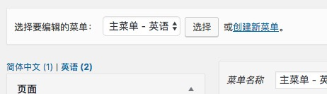
翻译文章
对于我们来说，最主要的还是创建文章和页面，这里我以文章举例。
打开「文章」—「写文章」页面，就可以开始创建文章了，点击页面右侧的语言链接，可以切换我们正在写的文章是属于哪一门语言的。
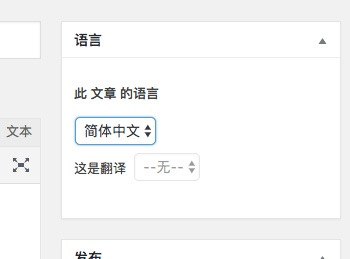
或着，可以点击菜单栏中的语言选项，来切换当前正在操作的语言。
切换了语言就会发现，不同语言下的目录是不同的，需要根据不同语言，创建不同的目录。
扩充你的 WPML 能力
WPML 提供了多种插件，可以安装这些拓展插件来提升 WPML 的能力，实现更好的管理。
插件列表详见这里。
总结
至此，我们就完成了使用 WPML 来创建一个多语言站点的操作，如果你希望使用一个免费版本的插件来构建多语言站点，下节课的 Polylang 不会让你失望。